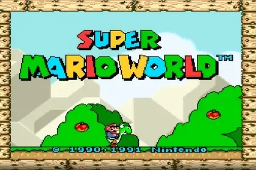
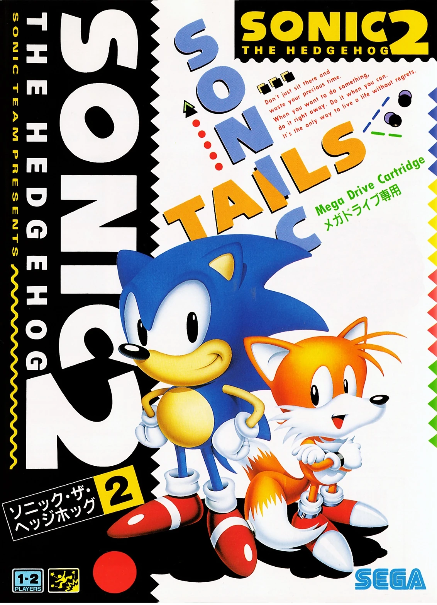
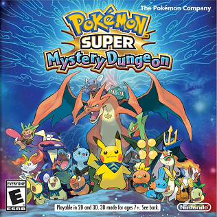

En este juego, juegas como Mario después de que Bowser se robo a Peach por la cuarta vez.

En este juego, tu juegas como Sonic el Erizo durante muchas zonas mientras que Tails el zorro te sigue como un compañero fiel.

En este juego, juegas como un humano que fue transformado en un pokemon por razones desconocidas mientras haces muchos amistades durante el camino
Al principio tenia miedo de presentar algo como esto, pero cuando me enseñaron un proyecto del año pasado que era basicamente lo mismo que esto, me dio inspiración y hice el proyecto basado en esto